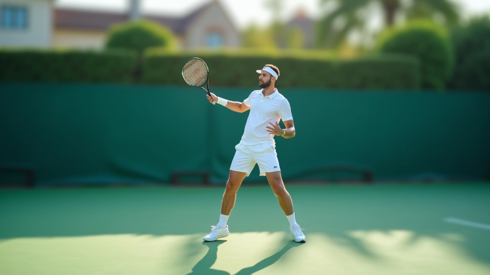
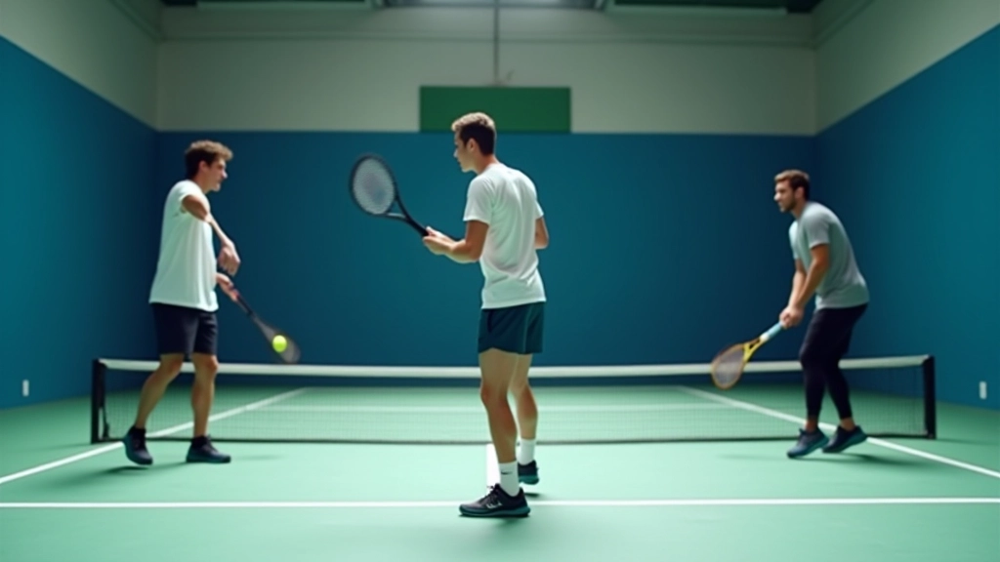
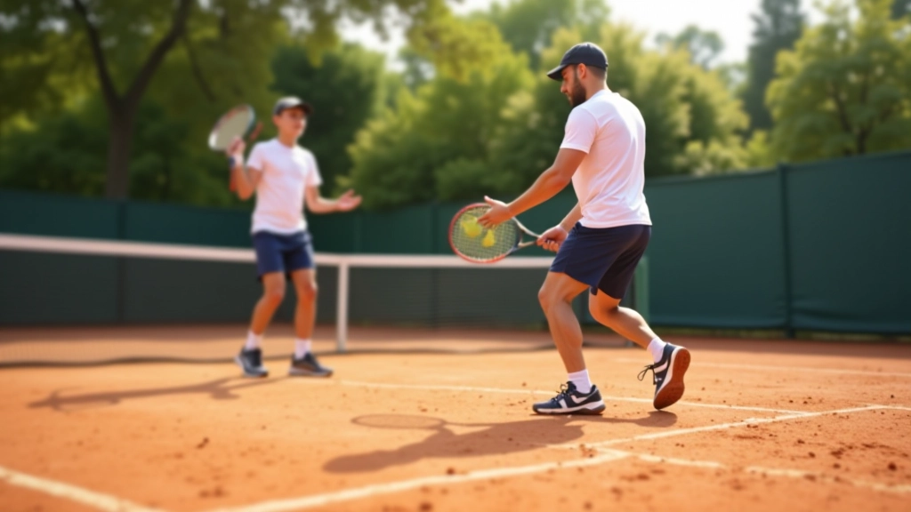
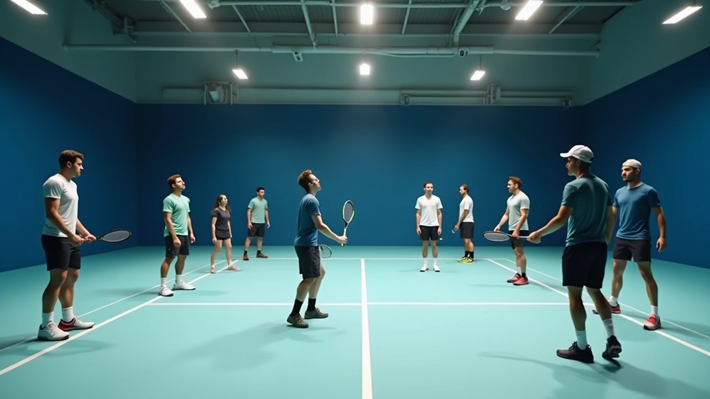

إتقان الضربة الطائرة: التقنية الأساسية والخطوات العملية
شرح مفصل لكيفية تطوير الضربة الطائرة من الصفر — بدءًا من موضع القدمين وحتى المتابعة الصحيحة.
فهم كيفية دمج الضربة الطائرة والاقتراب من الشبكة كجزء من استراتيجية هجومية متكاملة، مع أمثلة عملية من المباريات الحقيقية.

الإجابة بسيطة: القدرة على قراءة المباراة والتكيف معها. الضربة الطائرة والاقتراب من الشبكة ليسا مجرد تقنيات منفصلة — هما جزء من خطة هجومية متكاملة. عندما تتعلم دمج هذين العنصرين بشكل صحيح، ستجد أن لعبتك تتحول بشكل جذري.
في هذا الدليل، سنستكشف كيفية بناء استراتيجية شاملة تجمع بين الحركة والتوقيت والدقة. لن نركز على التفاصيل الدقيقة وحسب — بل على كيفية تطبيق هذه المهارات في ظروف اللعب الحقيقية.
الاستراتيجية الفعالة تبدأ بفهم متى تتقدم وكيف تتقدم. معظم اللاعبين يركضون نحو الشبكة بدون خطة واضحة. هم ينتظرون أن يحدث شيء ما. لكن اللاعب الذكي يتخذ قرارات مدروسة.
أولاً، تحتاج إلى قراءة ارتفاع الكرة وموضع خصمك. إذا كانت الكرة عالية وبعيدة عن خصمك، هذا وقت الهجوم. تقدم بخطوات سريعة لكن محكومة. ثانياً، استعد نفسك عقلياً للاستجابة السريعة. الضربة الطائرة تحتاج انتباهاً عالياً والحركة المتكاملة تحتاج ثقة.
ثالثاً، لا تنسَ التوازن. عندما تقترب من الشبكة، يجب أن تكون مستعداً للتحرك في أي اتجاه. الوقوف في وضع صلب مع ثني الركبتين قليلاً يضمن أنك جاهز دائماً.
التوقيت هو كل شيء. لا يمكنك الاقتراب من الشبكة في كل مرة — هذا سيكون خطأ. تحتاج إلى التعرف على الفرص الحقيقية.
عندما يرسل خصمك كرة ضعيفة أو عالية، هذا هو الوقت المثالي. لديك حوالي 0.5 إلى 1 ثانية لاتخاذ القرار والتحرك. لا تتردد. التردد يعني أن تفقد المبادرة. خذ خطوة سريعة إلى الأمام، ثم خطوة أخرى. بعد الخطوة الثانية، يجب أن تكون قريباً بما يكفي لتنفيذ الضربة الطائرة بثقة.
إذا كانت الكرة منخفضة أو قريبة جداً من خط الأساس الخاص بك، فابق حيث أنت. انتظر كرة أفضل. الصبر هو أيضاً استراتيجية.
الآن وقد تقدمت بنجاح، كيف تنهي النقطة؟
قف أمام الشبكة بمسافة 6 إلى 8 أقدام. ركبتاك مثنيتان قليلاً، أكتافك مرخيان. هذا يعطيك استقراراً وحرية حركة.
راقب خط الكرة بعناية. لا تتنبأ — شاهد. إذا كانت الكرة تتجه يميناً، تحرك يميناً. إذا كانت تتجه يساراً، تحرك يساراً. الحركة السريعة والصحيحة توفر عليك الجهد الإضافي.
ارفع المضرب إلى مستوى الكتف أو أعلى قليلاً. المضرب يجب أن يكون أمامك، ليس خلفك. هذا يسمح بحركة أسرع وأكثر دقة.
اضرب الكرة بقوة لكن بتحكم. لا تحاول إطلاق قوة كبيرة — الدقة أهم. بعد الضرب، تابع حركتك قليلاً للأمام لإنهاء النقطة.
الآن بعد فهمك للأساسيات، دعنا ننظر إلى حالات واقعية. في مباراة حقيقية، لن تحصل دائماً على كرات مثالية.
السيناريو الأول: خصمك يرسل كرة عالية من منطقة الوسط. أنت تقرأ هذا بسرعة وتتقدم. الكرة بطيئة نسبياً. خذ وقتك، لا تستعجل. ركز على الدقة. اضرب الكرة باتجاه الزاوية الخالية.
السيناريو الثاني: خصمك يرسل كرة مسطحة وسريعة. ليس لديك وقت كثير. تحرك بسرعة إلى جانب الكرة. لا تحاول إطلاق قوة — استخدم قوة الكرة ضدها. إعادة سريعة قصيرة غالباً ما تكون أفضل خيار.
السيناريو الثالث: الكرة منخفضة جداً. بدلاً من المخاطرة، أرسل كرة ضحلة فوق الشبكة مباشرة. هذا يعطيك فرصة أخرى للهجوم. الصبر والذكاء أفضل من التسرع.

هذا الدليل مخصص للأغراض التعليمية والمعلوماتية. كل لاعب لديه أسلوب فريد وتطور خاص به. التقنيات الموصوفة هنا تمثل أفضل الممارسات الشائعة، لكنها قد تختلف اعتماداً على مستوى اللاعب والظروف الفردية. نوصي بشدة باستشارة مدرب محترف للحصول على تقييم شخصي وملاحظات تفصيلية.
الاستراتيجية الشاملة لا تُتقن بقراءة دليل — تُتقن بالممارسة. ابدأ بتطبيق هذه المبادئ في جلسات التدريب الخاصة بك. لاحظ كيف تتحسن قراءتك للعبة. استشعر الفرق عندما تتقدم بثقة نحو الشبكة.
تذكر: التوقيت، الموضع، والتنفيذ — هذه الثلاثة عناصر تعمل معاً. عندما تتقن كل واحد منها وتفهم كيفية ربطها، ستجد أن لعبتك الهجومية تصبح أداة قوية حقاً. استمر في التدريب، كن صبوراً مع نفسك، وستصل إلى المستوى الذي تريده.
كتبه
فريق المراجعة والتحرير
فريق شبكة الضربة الطائرة التحريري، المركز على تقديم إرشادات عملية وسهلة المتابعة.
شرح مفصل لكيفية تطوير الضربة الطائرة من الصفر — بدءًا من موضع القدمين وحتى المتابعة الصحيحة.

تعلم كيفية الاقتراب الآمن والفعال من الشبكة مع الحفاظ على توازنك وجاهزيتك للرد الفوري.

مجموعة من التمارين العملية التي تقوي دقة ضربتك الطائرة وسرعة استجابتك عند الشبكة.